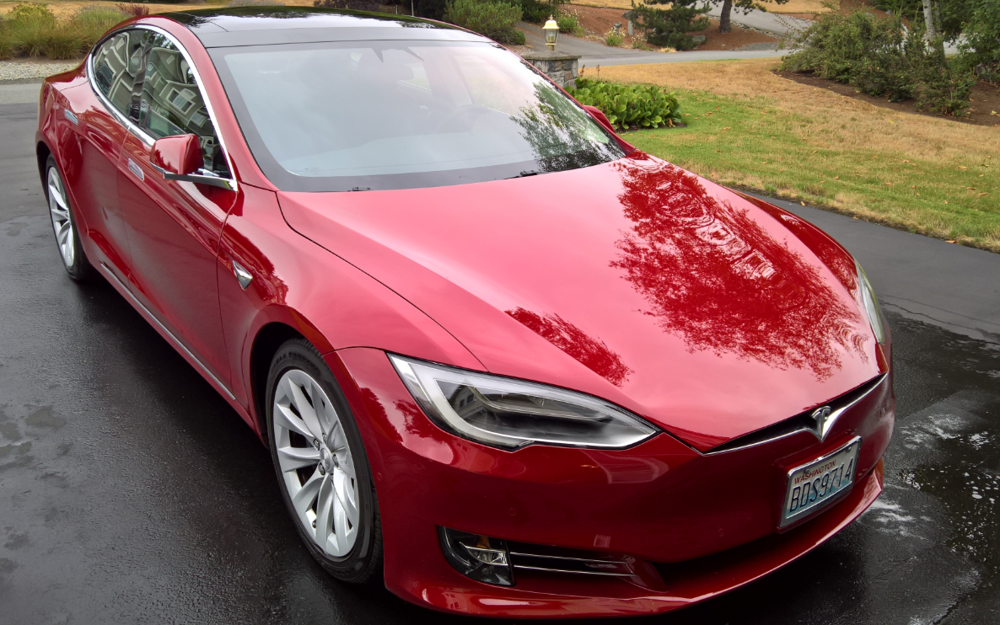

My Tesla Model S
Ok, it has been over 2 years now that I have been the proud owner of a Tesla Model S. I held off raving about it because I wanted to make sure it wasn’t just the honey moon phase that had me gushing about all the wonderful features. 2 1/2 years is long enough, I should know all the dirt by now, meaning I can now write a balanced review from my real day to day usage.

While I will be the first to admit that Tesla has not achieved any huge breakthroughs in build quality, they have achieved a new level of
customer delight because of their end-to-end customer experience. The best analogy I can think of is that Tesla is to cars what Apple is to phones.
A revolution in user experience. But before I get into that, let me list all the problems I have had with this car.
Paint
While driving the car home from California to Seattle, I got stuck in a blizzard behind a salt truck in Oregon and the truck was dumping giant 1 inch round salt rocks on the road which promptly bounced off the road and right onto my car. This left some nasty marks on the hood. Then not long after I had it home I dropped the charging cable down the side of the car which left a scratch on my driver’s door. So I found out the hard way that Tesla puts on a pretty thin paint job. So I decided to get a Vinyl Wrap for my entire car. It was expensive, but it has kept the car in pristine condition as you can see in the photo.
Doors & Trim
Early on the plastic clips holding the passenger side interior door together came off when someone slammed the door too hard. I took it in to get repaired, which they did quickly and for free. No more problems in this area. One piece of chrome trim wasn’t aligned very well and they promptly fixed this when I pointed it out.
Sensors
The vinyl wrap interfered with my parking sensors, but I didn’t know that for a while. I took it in for service, the service department was fantastic and did everything including replacing the entire sensor module, and then advised that I remove a dot over each sensor location. Bingo everything is great. So this was entirely my fault (and the fault of the company that did the wrap - they should have known better). So lesson learned, if you get a vinyl wrap make sure they do not cover the sensors.
So what do I like about it?
Everything.
The car greets me by extending the door handles as I approach. This seems silly, but it forms a bond over time, it makes the car seem alive, anticipating my every need. The seats are extremely comfortable. I used to own a Volvo and I thought they had the best seats. This one is better.
I’ve driven around 15,000 miles, mostly commuting about 10 miles to work and back every day, but I’ve also done some road trips to Oregon and Vancouver B.C. The car and all the electronics have worked perfectly. I use all the auto-pilot features, adaptive cruise control; auto-steering to keep me in my lane; summon, to get the car out of a tight parking spot, and more.
But for some reason the NTSB is picking on Tesla
because of a few idiots that chose to ignore all of Tesla’s warnings about paying attention while driving.
The car is not autonomous. Any sane driver will know this. Those that choose to believe otherwise are just idiots.
But blaming Tesla for these fatalities is like blaming Ford for making a car that someone fell asleep in. Where are all the
NTSB reports covering the other 37133 fatalities that happened in 2017?
I have a completely different view than the NTSB.
Adaptive Cruise Control Rocks
This is not your average crappy cruise control. Because of regenerative breaking the first thing you will notice is that the car nails the speed you set and just sticks there. It’s like a gymnast sticking the landing every time. It is flawless. Remember those old gas powered cars that would run away down hill and your cruise control was useless? A thing of the past. This feature is super useful in mind numbing bumper-to-bumper traffic because it can stay engaged all the way to stopped and then back to moving again.
Regenerative Braking
Speaking of regenerative braking, I absolutely love it. Not only do I get the thrill of seeing 50,000 Watts get pumped back into my battery but I also get the lovely green line of greenness on my dashboard power usage display reminds me that my car is making the world a better place. When I drive by a gas station my thumb always ends up on my nose, and my fingers start wiggling. Every now and then my tongue also makes a funny raspberry sound. It never gets old.
It takes some getting used to, because when you lift your foot off the pedal, the regenerative braking kicks in. This is configurable, but the standard setting has really grown on me. I love the sense of control this gives me now. When I get into an old car and lift my foot the car just wanders off on it’s own, rolling away until I put my foot on the brake. This now freaks me out, it’s like the old car has a mind of it’s own, it is not doing what I told it and I have to punish it with a slap on the brakes.
The regenerative braking is also saving my brake pads big time. When I got back home California, an 855 mile drive, I still had factory paint on the inside of the brake pads because I hardly ever use the brakes.
Super Charging
On my way home from California I used 3 super charging stations. Getting back to 80 % full in 20 minutes is amazing. I love how new stations keep popping up everywhere. On my trip to Vancouver the super charger was right in the down town area so I could walk from there to my business appointment. By the time I got back the car was full and ready for my trip home. So I spent absolutely no time standing around picking my nose while getting high on gas fumes! Electric charging is actually saving me time. This is such an amazing user experience. At home I have the high power wall charger which has also worked flawlessly, keeping my car topped up at all times. I love how you can schedule when the car charges, and reduce the top limit so Tesla can keep all battery cells balanced and in good condition. I have not seen any noticeable drop in battery capacity since the day I bought the car.
Auto-steering
On roads with clear lane markings the car allows me to enter an auto-pilot mode where the car will keep itself in the lane. It’s not perfect, and that is ok. What I have found is that it allows me to better keep tabs on the big picture of what is happening around me rather than the mind numbing problem of micro-steering. I know for sure this has helped me avoid some dangerous situations because I was looking down a side street, or way down the road at something going on ahead of me. One time I also noticed someone behind me was not going to stop, so I pulled into a different lane. I also found that I feel much more relaxed when I get to work because the car has taken over all the mind numbing parts of driving. Recently they added a new feature which is auto-lane changing when I turn on the indicator. Nice! Show me any other car that “keeps getting better” over time.
Navigation
The huge navigation screen is awesome, and the smaller turn-by-turn directions behind the steering wheel is a really nice touch. They have also shipped several updates that have greatly improved the navigation system. What do people do a lot in cars? They try to get someplace. It just makes so much sense to nail this scenario. I think Tesla has the worlds best car navigation experience, and probably will continue to for a long time to come.
Software Updates
A car that gets regular software updates, it is hilarious how far ahead of the competition they are on this front. I was nervous at first thinking they would one day push it too far and brick the car with a bad update. But each update has been flawless. Knock on wood. When I get the update notification my heart skips and it’s like Christmas all over again as I read up on all the new coolness they are packing into my car. Every other car company wants to chalk up your purchase in the black column and never hear from you again, lest you cost them more money. Not Tesla. Tesla wants to build a lasting relationship, raving fans, and it’s working.
Entertainment
All the multi-media features are state of the art. Integration with my iPhone is great. Being able to heat up my car from my office on those cold winter nights is delectable. I use the radio, and the built in music channels, PBS radio and so on. All work perfectly every time. But the feature that really brought a lot of chuckles in my family was the “Fart on demand” feature. Yes, I kid you not. I can press a button on the screen and make the seat under any unsuspecting passenger make a juicy 9.0 fart sound. My wife also loves the “Romantic mode” that turns the big screen into a fire place perfect for us to snuggle by. What other car company in the world would have dared to ship such crazy easter eggs?
Conclusion
The thing I keep coming back to is that Tesla has nailed end-to-end user experience. The way the car greets me, interior comfort, world class navigation, auto-pilot keeping me relaxed and happy on the road, high power charging, even the purchasing experience was more fun than previous cars I’ve bought. It was about as easy as buying a new flashlight from Amazon. So while they have not nailed build quality, I think everything else Tesla has done is game changing. I’m sure they will also revolutionize build quality one of these days as their manufacturing processes mature. Tesla has survived despite all the nay sayers. I think they know what they are doing. Tesla is a fast moving, innovative company. They are willing to play and have fun while they work their asses off making the world’s best cars. I can’t wait to see what they come up with next.